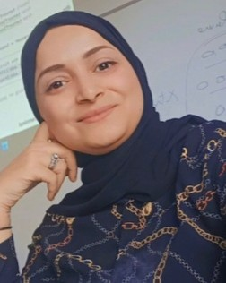

Dr. Wafa MEFTEH
Assistant Professor of Computer Science, National Engineering School of Tunis (ENIT), University of Tunis El-Manar. RISC Laboratory.
I am interested in complex intelligent software engineering and artificial intelligence, aiming to design adaptive, scalable and intelligent systems that address real-world challenges.
Languages : Arabic, English, French.

Teaching and Research Axis
Computer science
Algorithms, operating systems, distributed systems and databases.
Software engineering
Object-oriented analysis and design, UML and design patterns.
AI engineering
Machine learning, deep learning, reinforcement learning, multi-agent and agentic systems.
Data science
Machine learning pipelines, big data and data integration.
Cybersecurity
AI-based detection of attacks and anomalies.
Bio-Informatics
Human Microbiom Analysis for Detecting Inflammatory Bowel Diseases.